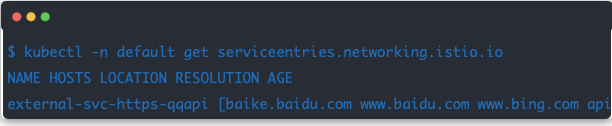

第四节 Istio ServiceEntry 的填坑之路
最近在开始研究 istio 使用，已经在一个未安装 istio 集群的环境中成功搞定 istio 安装配置且能正常使用。
但是最近在一个新升级的 istio 版本(1.11.0)的集群中，所有被注入 istio sidecar 的 pod 均无法对外访问 https。导致无法下发配置。具体表现为 IP 能通，但是无法 tls 握手成功。
- 无法下发配置的初期表现为获取配置时提示 404。
- 在一段时间后突然表现为无法建立 tls ，返回 000。
- 所有对外的 https 服务均无法正常访问。
在初期 debug 后，表现更为诡异，在不同的 pod 中有不同的表现：
- 在 tls 握手阶段，服务端突然拒绝连接。
- 在 tls 握手阶段，服务端返回与服务端本身不符合的证书。例如：
curl https://baidu.com提示服务端证书为*.example.com。 - 在跳过证书验证后，服务端响应了非预期的内容。
1、初步分析
由于无法访问外部 https ，初期猜想可能在 istio 上设置了访问策略或者其他安全相关配置，或者在 https 代理上出现了某些配置错误。
在问题出现后的一段时间中，我们对比了正常使用 istio 集群和问题集群的 istio 配置，所有 crd。均未发现特殊配置。
但是额外的，该集群有几个比较特殊的地方：
1、 在 istio 上设置了对外（公网服务）访问的 serviceentry，如下：

部分隐私域名已经删除，这条配置里面的域名总数多达几十条。
经过询问，得到的答复为：需要在 serviceentry 中加上这些域名才能使 mesh 中的服务正常对外访问。
2、集群中还运行了一个 dns-controller,是一个和 istio 有关的控制器。用于跨集群的 dns 发现等。在这里可以简单理解为对 mesh 的域名做了 CNAME 类似的操作。
举个例子：在命名空间 abc 中运行着服务 service-api默认访问域名为 service-api.abc,在 istio 中需要实现能够通过 service-api.hello 访问。于是该 controller 在空间内生成了服务对应的 serviceentry用于 “CNAME”。
在这里出现了第一个问题：为什么必须要增加公网域名的 serviceentry 才能够访问公网域名？
因为 istio 默认不限制 mesh 对公网的访问，而且在正常的集群中也无需这个配置。
在这之前，由于默认 sidecar 获取全局的 mesh 配置导致 sidecar 内存占用超 1GB。我们还使用了 sidecar 将配置限制在当前一个空间内以减少 sidecar 占用。
apiVersion: networking.istio.io/v1beta1
kind: Sidecar
spec:
egress:
- hosts:
- ./*
在出现问题后，我们尝试了几个方向：
2、尝试解决
在出现问题后，我们尝试了几个方向：
- 有反馈说 serviceentry 没有加上。也就是上面说的对公网访问的 serviceentry。也尝试增加了对应域名的 serviceentry，问题依然存在。但这比之前好一点，被添加的域名能够成功访问。也就是说，这条路有效，但又不完全有效。第一个问题依旧没有被解答。
- 新开了一个空间 istio-demo 并部署了 book-info 示例程序。在部署成功的示例程序中，也存在上述问题。
在后来的 debug 中，我们在 pod 中尝试建立 tls 连接：
除了直接在握手阶段就被服务端关闭连接的情况外，还遇到了：
$ curl https://baidu.com
SSL: certificate subject name '*.example.com' does not match target host name 'baidu.com'
在这里出现了第二个问题：'*.example.com' 是哪里来的？有中间人吗？中间人是谁，证书在哪里配置的？
3、转折点
因为问题出现于 https 无法建立连接，所以方向一直被引向了 tls 代理之类的问题。
直到：
$ curl -k https://baidu.com
404 page not found
这里是访问的众所周知的域名，为什么返回了 "404 page not found"？这个响应说明了该响应应该来自于某个内部 golang 语言编写的服务。
在访问其他 https 域名也有同样的效果，似乎所有 https 访问都被转到了某个内部的服务。
在这个过程中，我们都是使用到的 istio proxy-status 命令来查看 sidecar 配置注入状态，也未见明显异常。
无奈之下，我尝试使用了 istioctl proxy-config 查看 sidecar 配置，也就是 envoy 的配置。
$ istioctl proxy-config all sample-c59f744df-8kq7m.istio-demo
...
0.0.0.0 443 SNI: music.baidu.com Cluster: outbound|443||music.baidu.com
0.0.0.0 443 SNI: i.xiaoi.com Cluster: outbound|443||i.xiaoi.com
0.0.0.0 443 ALL Cluster: outbound|443||traefik.cutom-name
0.0.0.0 443 SNI: dict.baidu.com Cluster: outbound|443||dict.baidu.com
0.0.0.0 443 SNI: datarobotapi.bdia.com.cn Cluster: outbound|443||datarobotapi.bdia.com.cn
...
Server Name Indication: SNI
在这个命令的输出中，在上千个规则中发现了这么一条 0.0.0.0 443 ALL Cluster: outbound|443||traefik.cutom-name
直觉就是这个规则有问题。猜测这个规则的存在将其匹配的 443 端口 ALL 的流量转发至了 traefik.cutom-name ,这个 traefik.cutom-name 是 上面说到的 dns-controller 生成的用于 CNAME 的 serviceentry。
因为还不是很了解 istio envoy 的规则，所以仅猜测。如果是熟悉的话，能够一眼看出问题。
$ curl -k -vvv https://baidu.com
...
* Server certificate:
* subject: ...=traefik...
...
404 page not found
在 curl 给出的 debug 信息中发现了服务端使用的 tls 证书，subject 中包含了 traefik 等字段。也就是说这个证书是 traefik 自签发的。实锤了这个后端服务就是 traefik。
可以断定，某个错误的配置导致生成了 0.0.0.0:433 -> traefik.cutom-name 的映射。
后来在阅读了 envoy 的文档LDS后，解释了这些规则的用途。
0.0.0.0 443 ALL Cluster: outbound|443||traefik.cutom-name表示匹配所有 IP 地址 & 443 端口 & 所有 SNI 的流量均 mesh 到目的服务traefik.cutom-name
4、逐渐清晰
既然和 traefik.cutom-name 有关，也就是和上面说到的 dns-controller 有关，和其生成的 serviceentry 有关。以其中一条举例：
apiVersion: networking.istio.io/v1beta1
kind: ServiceEntry
metadata:
namespace: abc
name: traefik-cutom-name
spec:
hosts:
- traefik.cutom-name
location: MESH_INTERNAL
ports:
- name: https-443
number: 443
protocol: TLS
resolution: DNS
dns-controller 生成了上述的 serviceentry。乍看还未察觉到问题，但肯定有问题。
在翻阅 ServiceEntry 文档 后。最终发现问题：
没有设置 spec.addresses。
其设置为 MESH_INTERNAL 但是没有指定该 service 的后端。既没有指定到期望服务 DNS 也没有指定 IP。那么此时默认行为是，将 dns traefik.cutom-name 作为上游，通过该 dns 去发现服务的 endpoint。由于更改了 coredns 的配置，这个配置暂时没有问题。envoy 根据这部分生成 cluster 并配置使用 DNS 作为 EDS。
但在没有设置 spec.addresses 时,这个 addresses 可以填写 IP 也可填写 endpoint 所在的 CIDR。envoy 根据此部分生成的 listener 则会使用 0.0.0.0 作为 IP 地址。那这会产生什么问题呢？
举个 🌰 栗子：
如果 serviceentry A 未设置 addresses 并配置 443 端口服务，那么在 envoy 生成 listener 为：0.0.0.0:443 -> service A。
此时访问 https://baidu.com 时则会匹配到该 listener，envoy 则将数据包发往该服务。
也就会收到 tls 证书与预期不一致的结果。同理所有使用 443 端口的服务也会如此。如果有多个 serviceentry 都使用 443 端口，则在生成 listener 时会随机选择了一个服务(该逻辑由 listio 控制)。
解决办法：
- 指定 address 到 k8s service clusterIP
- 指定 address 到 k8s service CIDR
由于可以直接拿到 service IP 所以可以直接填写 service IP。
5、解决
在更改控制器逻辑后：
apiVersion: networking.istio.io/v1beta1
kind: ServiceEntry
metadata:
name: traefik-cutom-name
namespace: abc
spec:
addresses:
- <service cluster IP> # 指定了 addresses,详情参看istio文档。
endpoints:
- address: traefik.abc
hosts:
- traefik.cutom-name
location: MESH_INTERNAL
ports:
- name: https-443
number: 443
protocol: TLS
resolution: DNS
再次查看 config-dump
$istioctl proxy-config all sample-55c7969547-z92zk.istio-demo
0.0.0.0 80 ALL PassthroughCluster
0.0.0.0 443 ALL PassthroughCluster
0.0.0.0 443 SNI: traefik.custom-name Cluster: outbound|443||traefik.custom-name
规则一切正常。PassthroughCluster 是一条特殊规则，表示流量不经过修改直接出 istio。
6、复盘
好的，现在 debug 的过程中产生的几个问题也得到解决。
- 为什么必须要增加公网域名的 serviceentry 才能够访问公网域名？
在之前的使用中，由于该 bug 的存在，使得访问向公网的 https 服务均被转发到了内部某个服务。所以无法访问，在这样的情况下增加 MESH_EXTERNAL serviceentry 相当于在规则中增加了特殊匹配的规则,使得能够匹配成功，流量得以出 istio。举例: 0.0.0.0 443 SNI: music.baidu.com Cluster: outbound|443||music.baidu.com
在该 bug 修复后，不再需要对公网的服务做配置了。
*.example.com'是哪里来的？
*.example.com 实际是后端某个服务上使用的证书，由于错误的配置,数据包错误分发。实际所有的 https 均连到了这个错误的后端。
- 为什么不同的 pod 下表现不一致，有的握手失败，有的提示证书错误？
在 sidecar 配置的过程中，0.0.0.0 443 ALL这样的规则(serviceentry)会有多个，在生成规则的时候，会并发随机选择一个后端作为该地址上的服务。如果连接到了 mysql 这类的服务，则无法握手成功。
- 为什么未指定 address 的 serviceentry 会被匹配到 0.0.0.0 ？
这是 istio 的考虑，在翻看源码conversion.go#L57后发现 0.0.0.0 是其默认值。
- 为什么在此次升级后才发现问题？
因为 sidecar 配置的存在。在之前的 istio 也存在该问题，只是通过为外部 https 设置 serviceentry 得以规避。而且该规则存在 default 命名空间内。
在升级后，我们对空间设置了 sidecar 。使得 default 空间的 serviceentry 无法传播到其他空间，使得其他空间的 https 均被转到了某个后端服务。